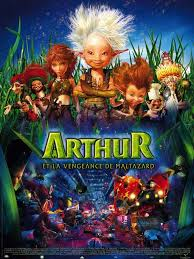
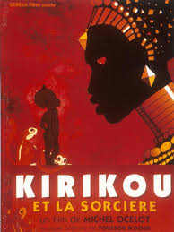
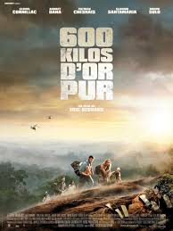

I've been working in the Adtech industry in a french company called "1000mercis", and I want to improve my technical skills in order to success in future jobs, still on the Adtech or elsewhere.
See by yourself!Teddy Riner est une légende du judo avec 9 titres de champion du monde et 2 titres olympiques
|  |
Comme tous les enfants de son âge, Arthur est fasciné par les histoires que lui raconte sa grand-mère pour l'endormir : ses rêves sont peuplés de tribus africaines et d'inventions incroyables, tirées d'un vieux grimoire, souvenir de son grand-père mystérieusement disparu depuis quatre ans.
|
|  |
Le minuscule Kirikou nait dans un village d'Afrique sur lequel une sorciere, Karaba, a jete un terrible sort: la source est assechee, les villageois ranconnes, les hommes sont kidnappes et disparaissent mysterieusement. "Elle les mange", soutiennent les villageois dans leur hantise. Karaba est une femme superbe et cruelle, entouree de fetiches soumis et redoutables.
|
|  |
Un groupe d'aventuriers entreprend de faire le casse d'une mine d'or au coeur de la Guyane. Mais l'opération ne se passe pas comme prévu, et, lors de leur fuite, leur hélicoptère doit se poser en catastrophe au milieu de la jungle. Ils ont mis la main sur six cents kilos d'or... mais doivent maintenant les porter sur leurs dos dans un milieu très hostile.
|
I've built this page during the fullstack programm of Le Wagon. It was an amazing experience!